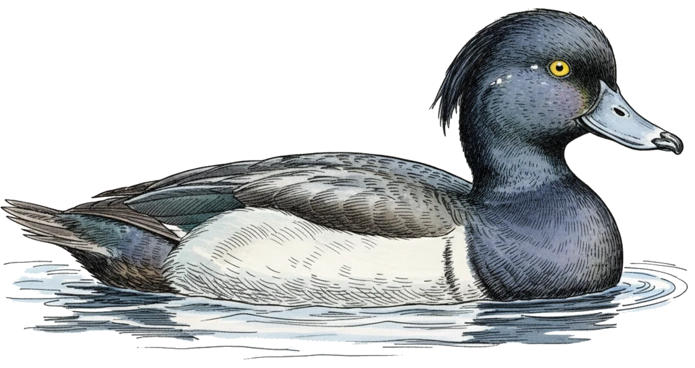
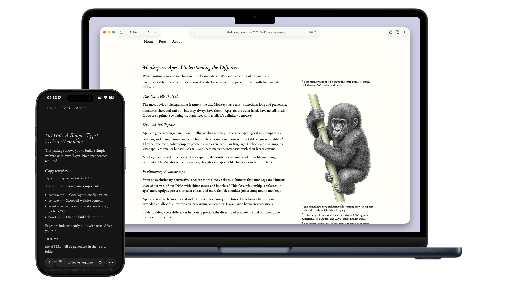

凤头潜鸭（学名 Aythya fuligula）是一种中型潜水鸭，原生于欧亚大陆。凭借卓越的潜水能力，它们能深入水下捕食猎物。 The tufted duck (Aythya fuligula) is a medium-sized diving duck native to Eurasia. Known for its diving ability, it can plunge to great depths to forage for food.
Tufted 博客模板
欢迎来到YinWang的博客。

大家好（运行 preview 或其他本地服务）中看到了本页面，说明你已经成功安装了依赖、成功构建了网页、成功运行了预览。恭喜你！
想要使用这个模板编写你自己的网站，你需要学会使用 Typst。放心，非常好上手。
我在目前的网站中包含了尽可能多的 Typst 用例11 例如文字、段落、分级标题、引用块、代码块、有序列表、无序列表、表格、图片、公式、链接、脚注、参考文献、嵌入 markdown 等。这块文字便是脚注，使用 #footnote() 函数编写。，你可以在源代码中看到这些内容的 Typst 实现。我也包含了丰富的文档来帮助你编写页面和部署网站，你可以在 Docs 页看到这些文档。
🎨 样式特点
Tufte 样式 源于数据可视化大师 Edward Tufte22 爱德华·罗尔夫·塔夫特（生于1942年3月14日），常被称为“ET”，是美国统计学家，耶鲁大学政治学、统计学与计算机科学荣休教授。他因在信息设计领域的著述和作为数据可视化领域的先驱而闻名。 的设计理念，主张“内容至上”与极简主义，力求去除一切干扰信息的视觉杂音。
The Tufte style originates from the design philosophy of data visualization master Edward Tufte33 Edward Rolf Tufte (/ˈtʌfti/; born March 14, 1942), sometimes known as “ET”, is an American statistician and professor emeritus of political science, statistics, and computer science at Yale University. He is noted for his writings on information design and as a pioneer in the field of data visualization., advocating for a “content-first” approach and minimalism while striving to eliminate all visual noise that distracts from the information.
其最鲜明的特点是采用宽大的侧边栏布局，将注释、参考文献和图表直接并排展示在正文旁，取代了传统的脚注或尾注，配合优雅的衬线字体与类纸张背景，在数字屏幕上复刻了如经典学术著作般清晰、优雅、沉浸的深度阅读体验。